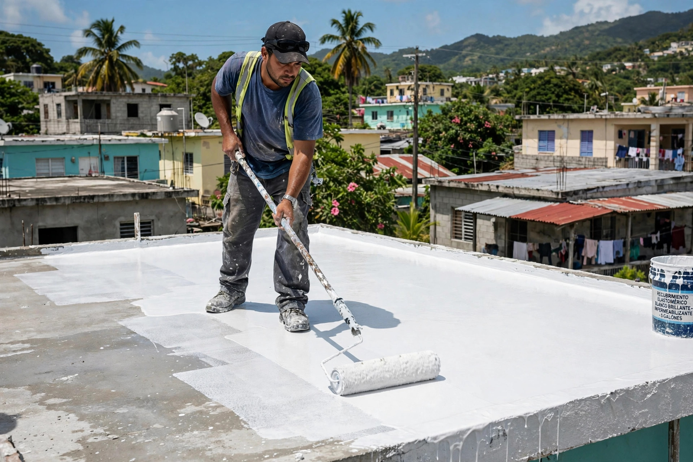
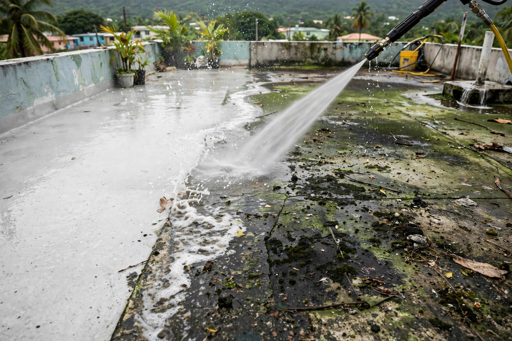
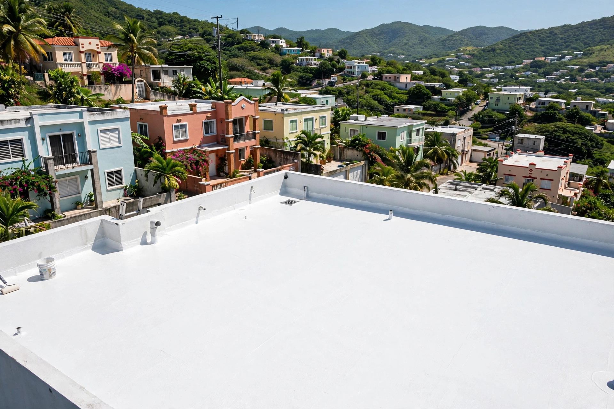

Sellado de techos, reparaciones y multiservicios para tu hogar o negocio.
Sellado, reparación y mantenimiento de techos: así queda cuando se hace bien.



Sellado de techos, reparaciones y multiservicios para tu hogar o negocio en Caguas. Un solo llamado, trabajo garantizado.
Protección elastomérica contra filtraciones y humedad.
Grietas, juntas y puntos críticos corregidos a tiempo.
Limpieza y revisión para alargar la vida de tu techo.
Techos, marquesinas y exteriores como nuevos.
Un solo llamado para tu hogar o negocio.
Cotización clara y sin compromiso por WhatsApp.
Trabajo serio, trato directo y resultados que se ven.
Un solo llamado resuelve techo y más.
Llegamos donde nos necesites.
Trabajo hecho para durar.
Cotiza por WhatsApp sin compromiso.
Lo que todo dueño de casa pregunta antes de sellar su techo.
Cada 4 a 5 años, según el sistema aplicado y la exposición al sol y la lluvia. En Puerto Rico el sol fuerte acelera el desgaste.
Sí, si está bien adherido. Si está levantado, con burbujas o cuarteado, hay que removerlo primero para que el nuevo sistema pegue bien.
Inspeccionamos el techo, corregimos grietas, juntas y drenajes, y luego aplicamos el sistema de sellado. El sellado no tapa problemas: los corrige primero.
Un techo residencial típico toma de 1 a 3 días, según el tamaño y la condición. Te damos el tiempo estimado antes de empezar.
Por WhatsApp al 787-925-5700: envíanos fotos del techo y te respondemos con un estimado gratis.
Esta página es una muestra de lo que hacemos. Llevamos tu negocio a internet con oferta de lanzamiento por tiempo limitado.